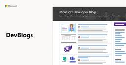
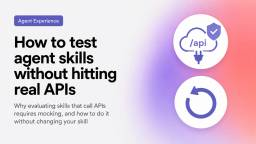

Microsoft for Developers
https://devblogs.microsoft.com/
Microsoft for Developers - Get the latest information, insights, and news from Microsoft.
フィード

The Microsoft 365 Copilot Agent’s Playbook: A Practical Livestream Series for Building Better Agents
Microsoft for Developers
Building on Microsoft 365 Copilot? Here’s your playbook. Declarative agents are quickly becoming one of the most exciting ways to extend Microsoft 365 Copilot and bring organizational knowledge, workflows, and tools directly into the flow of work. But as agent capabilities grow, so does the need for practical guidance: How do you build agents that […]The post The Microsoft 365 Copilot Agent’s Playbook: A Practical Livestream Series for Building Better Agents appeared first on Microsoft for Developers.
1日前
How to test agent experience changes without shipping them
Microsoft for Developers
Most changes you think will improve AI agent behavior won't. We tested a dozen hypotheses on a real project upgrade scenario and the majority failed. Learn how to emulate documentation, API, and MCP server changes locally so you can validate what works before shipping anything to production.The post How to test agent experience changes without shipping them appeared first on Microsoft for Developers.
3日前

How to test agent skills without hitting real APIs
Microsoft for Developers
Your agent skill calls an API. The moment you start evaluating it, every run either costs money or mutates production data. Learn how to mock APIs transparently so you can run evals without changing your skill or hitting real endpoints.The post How to test agent skills without hitting real APIs appeared first on Microsoft for Developers.
7日前

Building AX evals that actually work
Microsoft for Developers
This is the eighth and final article in a series about Agent Experience (AX): the practice of making AI coding agents work correctly with your technology. The series covers what you can and can’t control in the agent stack, how to measure whether your extensions are helping or hurting, and how to iterate toward better […]The post Building AX evals that actually work appeared first on Microsoft for Developers.
9日前
Let’s Learn GitHub Copilot App – Free Virtual Training Event
Microsoft for Developers
Join us for a free online event series kicking off July 16 to learn how to get started with the GitHub Copilot App!The post Let’s Learn GitHub Copilot App – Free Virtual Training Event appeared first on Microsoft for Developers.
16日前
The hidden variables in your agent eval
Microsoft for Developers
This is the seventh article in a series about Agent Experience (AX): the practice of making AI coding agents work correctly with your technology. The series covers what you can and can’t control in the agent stack, how to measure whether your extensions are helping or hurting, and how to iterate toward better outcomes. You […]The post The hidden variables in your agent eval appeared first on Microsoft for Developers.
16日前
Don’t rewrite your CLI for agents
Microsoft for Developers
There’s advice making the rounds: replace your CLI args with a single --json payload so agents can use your tool more effectively. The thinking being, that agents already think in structured formats, and nested data maps cleanly to JSON. Flat args on the other hand, force awkward conventions like repeating --service-name to delimit multi-value groups, […]The post Don’t rewrite your CLI for agents appeared first on Microsoft for Developers.
17日前
Not all model upgrades are upgrades
Microsoft for Developers
A new model drops with lower per-token pricing and better benchmarks. You switch. A week later someone asks why the agent is burning 12x more tokens on the same task while producing worse output. We ran 150 agent tasks across 15 scenarios on two models, Claude Sonnet 4.6 and Claude Sonnet 5, using GitHub Copilot […]The post Not all model upgrades are upgrades appeared first on Microsoft for Developers.
18日前
What AI benchmarks are not telling you
Microsoft for Developers
This is the sixth article in a series about Agent Experience (AX): the practice of making AI coding agents work correctly with your technology. The series covers what you can and can’t control in the agent stack, how to measure whether your extensions are helping or hurting, and how to iterate toward better outcomes. We […]The post What AI benchmarks are not telling you appeared first on Microsoft for Developers.
23日前
Your agent already has a plan
Microsoft for Developers
If an agent isn’t doing the right thing, the obvious move is to make the docs clearer. Add a tip, spell out the correct command, describe the right approach more prominently. You do all of that, and the agent still ignores it. It does what it had already decided to do. The tip wasn’t ignored […]The post Your agent already has a plan appeared first on Microsoft for Developers.
1ヶ月前